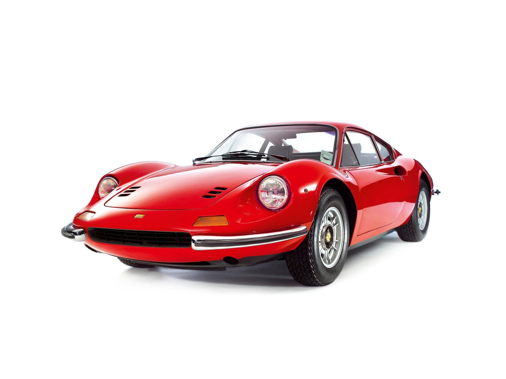
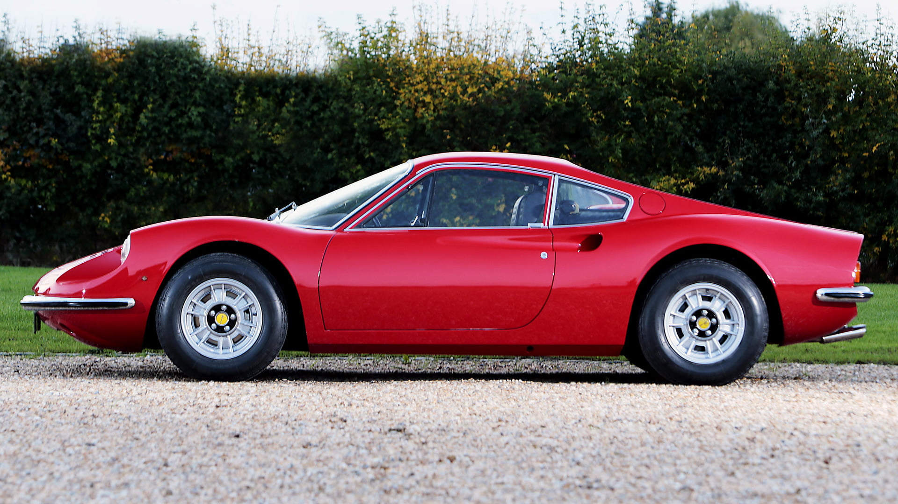
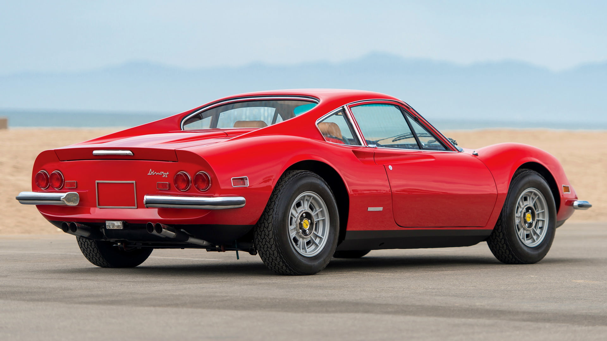

Hello, fellow car enthusiasts! Today I want to share with
you my experience of driving one of the most fantastic cars
ever made: the Ferrari Dino 246 GT. This car is a legend in
the history of Ferrari and a masterpiece of design and
engineering.

Let me tell you why I love this car so much and why you
should too.
The Ferrari Dino 246 GT was produced from 1969 to 1974 as a successor to the 206 GT. It was named after Enzo Ferrari's son, Alfredo "Dino" Ferrari, who died in 1956 and had worked on the development of a V6 engine for racing. The Dino 246 GT was the first Ferrari to use a mid-engine layout, which improved the handling and balance of the car. It was also the first Ferrari to be sold in large numbers, with over 2,000 units produced.
The Dino 246 GT has a beautiful and elegant shape that is instantly recognizable. The body was designed by Pininfarina and built by Scaglietti, two of the most renowned Italian coachbuilders. The car has a low and sleek profile, with a long hood and a short rear deck. The front features a distinctive grille with two round headlights and two smaller fog lights. The rear has four round taillights and two chrome exhaust pipes. The car is painted in a stunning red color that makes it stand out from the crowd.
The Dino 246 GT is powered by a 2.4-liter V6 engine that produces 195 horsepower and 166 pound-feet of torque. The engine is mounted transversely behind the cockpit and drives the rear wheels through a five-speed manual transmission. The car can accelerate from 0 to 60 mph in 7.1 seconds and reach a top speed of 146 mph. The car also has a four-wheel independent suspension, disc brakes, and rack-and-pinion steering that make it agile and responsive on the road.
The Dino 246 GT is not only a fast and fun car to drive, but also a comfortable and luxurious one. The interior is spacious and cozy, with leather seats, wood trim, and chrome accents. The dashboard has a simple and elegant layout, with three round gauges for speedometer, tachometer, and fuel level. The center console has a radio, a clock, and controls for the heater and ventilation. The steering wheel is made of wood and has three spokes with the Ferrari logo in the center. The car also has electric windows, power steering, and air conditioning.
The Ferrari Dino 246 GT is one of my favorite cars of all time and I'm sure you can see why. It is a fantastic combination of style, performance, comfort, and history that makes it a joy to own and drive. If you ever have the chance to see one in person or even better, to drive one yourself, don't miss it. You will fall in love with this car as I did.